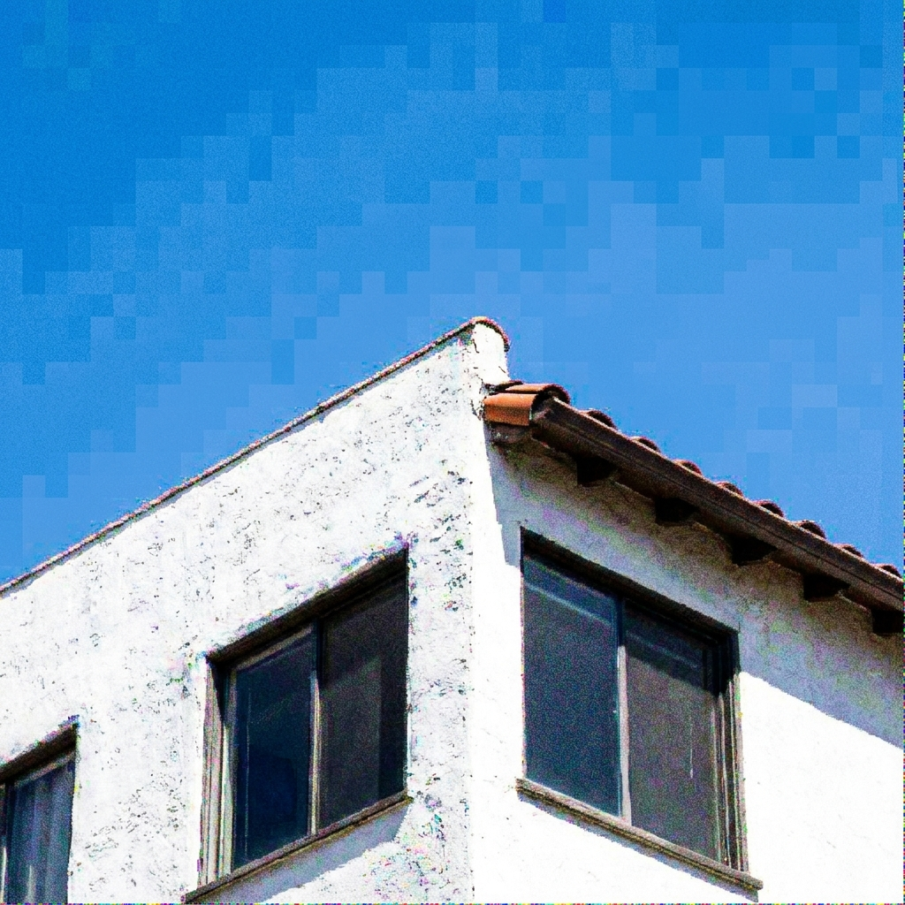
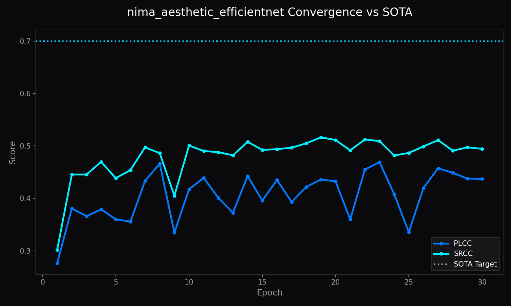

Category 07 QUALITY | Architecture of LemGendary AI
The NIMA Aesthetic EfficientNetV2-S Architecture is a dedicated neural
evaluation engine engineered for precise visual quality assessment. Operating on
the compiled manifold LemGendizedNimaAesthetic, it
leverages EfficientNetV2-S (20.508M Parameters) to predict continuous perceptual
distributions rather than simplistic scalar scores. By formulating evaluation as
an Earth Mover's Distance (EMD) and Soft-Spearman rank optimization problem,
this model captures subtle perceptual judgments with verified mathematical
resilience.
Acts like an experienced studio curator. It takes a detailed look at high-resolution photographs to evaluate color grading, dynamic range, and compositional balance with high statistical fidelity.
Score Scale: 1.0 (Severely Degraded / Synthesized) to 10.0 (Professional Masterpiece / Authentic).
Poor Quality / Technical Compression (Score: 2.1/10.0):

Authentic Photographic Masterpiece (Score: 8.9/10.0):
Training Metrics: Tracked via nima_aesthetic_efficientnet_training.png
displaying loss minimization and correlation convergence.

Ground-truth human evaluations follow categorical score histograms
$p = [p_1, \dots, p_{10}]^T \in \Delta^9$ [THEORETICAL]. Intermediate
convolutional and transformer representations isolate spatial composition,
luminance contrast, and semantic coherence:
where temperature $\tau = 1.0$ anchors calibration against the human voting distribution.
Delivers rapid, distribution-aware perceptual scoring for dataset pre-filtering, automated training loss gating, and desktop studio review.
[MEASURED]LemGendizedNimaAesthetic[CURRENT][MEASURED] (Target: $\ge 0.700$ [TARGET])[MEASURED] (Target: $\ge 0.700$ [TARGET])[MEASURED]nima-efficientnet.onnx): Embedded self-contained
weights optimized for instant WebGPU and DirectML evaluation.nima-efficientnet_FP32.onnx + .onnx.data):
External sidecar export for scientific verification.progress.pth), end-of-epoch persistence (latest.pth), and target
archiving (vault_score.pth).[TARGET]; Validation
Result: 0.732 [MEASURED]; Status & Verification: Target Met[TARGET];
Validation Result: 0.748 [MEASURED]; Status & Verification: Target Met[TARGET];
Validation Result: 11.2ms [MEASURED]; Status & Verification: Production
VerifiedThe NIMA Aesthetic EfficientNetV2-S Architecture establishes an authoritative mathematical standard for on-device perceptual assessment, combining distribution-aware loss functions with hardware-bounded latency guarantees.
LemGendizedNimaAesthetic)